산업안전기사 (2011-08-21 기출문제)
1과목: 안전관리론
1. 다음 중 안전보건관리규정에 포함될 사항과 가장 거리가 먼 것은?
- 안전ㆍ보건교육에 관한 사항
- 작업장 안전ㆍ보건 관리에 관한 사항
- 재해사례 분석 및 연구ㆍ토의에 관한 사항
- 안전ㆍ보건관리 조직과 그 직무에 관한 사항
(정답률: 80%)

2. 다음 중 산업안전보건법상 안전ㆍ보건표지에 있어 금지 표지의 종류가 아닌 것은?
- 금연
- 접촉금지
- 물체이동금지
- 차량통행금지
(정답률: 64%)
3. 다음 중 브레인스토밍(Brainstorming)기법에 관한 설명으로 옳은 것은?
- 지정된 표현방식을 벗어나 자유롭게 의견을 제시한다.
- 주제와 내용이 다르거나 잘못된 의견은 지적하여 조정한다.
- 참여자에게는 동일한 회수의 의견제시 기회가 부여 된다.
- 타인의 의견을 수정하거나 동의하여 다시 제시하지 않는다.
(정답률: 84%)
4. 200명이 근무하는 사업장에서 근로자는 하루 9시간씩 연간 270일을 근무하였다. 이 사업장에서 연간 15건의 재해로 인하여 120일의 근로손실과, 73일의 휴업일수가 발생하였다면 이 사업장의 총근로손실일수는 며칠인가?
- 120일
- 174일
- 180일
- 193일
(정답률: 47%)
5. 다음 중 무재해운동 관련 규정에 따라 무재해로 분류되는 경우가 아닌 것은?
- 출ㆍ퇴근 도중에 발생한 재해
- 제3자의 행위에 의한 업무상 재해
- 운동경기 등 각종 행사 중 발생한 재해
- 작업종료후의 정리정돈 과정에서 발생한 재해
(정답률: 72%)
6. 산업안전보건법상 사업장에서 중대재해가 발생한 사실을 알게 된 경우 관할 지방고용노동관서의 장에게 보고하여야 하는 시기는?
- 지체없이
- 12시간 이내
- 24시간 이내
- 48시간 이내
(정답률: 87%)
7. 다음 중 안전교육의 단계에 있어 올바른 행동의 습관화 및 가치관을 형성하도록 하는 교육은?
- 안전의식 교육
- 안전태도 교육
- 안전지식 교육
- 안전기능 교육
(정답률: 69%)
8. 다음 중 재해의 발생 원인에 있어 관리적 원인에 해당하지 않는 것은?
- 안전수칙의 미제정
- 작업량 과다
- 정리정돈 미실시
- 사용설비의 설계불량
(정답률: 68%)
9. 다음 중 직원들과의 원만한 관계를 유지하며 그들의 의견을 존중하여 의사결정에 반영하는 리더십은?
- 변혁적 리더십
- 참여적 리더십
- 지시적 리더십
- 설득적 리더십
(정답률: 81%)
10. 다음 중 안전점검 및 안전진단에 관한 설명으로 적절하지 않은 것은?
- 안전점검의 종류에는 일상, 정기, 특별점검 등이 있다.
- 안전점검표는 가능한 한 일정한 양식으로 작성한다.
- 안전진단은 사업장의 안전성적이 동종의 업종보다 우수할 때 실시한다.
- 안전진단시 근로자대표가 요구할 때에는 근로자대표를 입회시켜야 한다.
(정답률: 86%)
11. 다음 중 학습을 자극(Stimulus)에 의한 반응(Response)으로 보는 이론에 해당하는 것은?
- 장설(Field Theory)
- 통찰설(Insight Theory)
- 기호형태설(Sign-gestalt Theory)
- 시행착오설(Trial and Error Theory)
(정답률: 63%)
12. 다음 중 Off.J.T(Off Job Training) 교육방법의 장점으로 옳은 것은?
- 개개인에게 적절한 지도훈련이 가능하다.
- 훈련에 필요한 업무의 계속성이 끊어지지 않는다.
- 다수의 대상자를 일괄적, 조직적으로 교육할 수 있다.
- 효과가 곧 업무에 나타나며, 훈련의 좋고 나쁨에 따라 개선이 용이하다.
(정답률: 83%)
13. 다음 중 학습에 대한 동기유발 방법 가운데 외적동기 유발방법이 아닌 것은?
- 경쟁심을 일으키도록 한다.
- 학습의 결과를 알려 준다.
- 학습자의 요구 수준에 맞는 교재를 제시한다.
- 적절한 상벌에 의한 학습의욕을 환기시킨다.
(정답률: 56%)
14. 다음 중 제조물책임법상 결함의 종류에 해당하지 않는 것은?
- 사용상의 결함
- 설계상의 결함
- 제조상의 결함
- 표시상의 결함
(정답률: 74%)
15. 다음 중 재해원인 분석기법의 하나인 특성요인도의 작성방법으로 잘못 설명된 것은?
- 특성의 결정은 무엇에 대한 특성요인도를 작성할 것인가를 결정하고 기입한다.
- 등뼈는 원칙적으로 우측에서 좌측으로 향하여 가는 화살표를 기입한다.
- 큰뼈는 특성이 일어나는 요인이라고 생각되는 것을 크게 분류하여 기입한다.
- 중뼈는 특성이 일어나는 큰뼈의 요인마다 다시 미세하게 원인을 결정하여 기입한다.
(정답률: 79%)
16. 다음 중 산업안전보건법에 따라 환기가 극히 불량한 좁은 밀폐된 장소에서 용접작업을 하는 근로자를 대상으로 한 특별 안전ㆍ보건교육내용에 해당하지 않는 것은? (단, 일반적인 안전ㆍ보건에 필요한 사항은 제외한다.)
- 환기설비에 관한 사항
- 질식시 응급조치에 관한 사항
- 작업순서, 안전작업방법 및 수칙에 관한 사항
- 폭발 한계점, 발화점 및 인화점 등에 관한 사항
(정답률: 78%)
17. 다음 중 적성의 기본요소라 할 수 있는 것은?
- 지능
- 교육수준
- 환경조건
- 가족관계
(정답률: 68%)
18. 안전교육방법 중 학습자가 자신의 학습속도에 적합하도록 프로그램 자료를 가지고 단독으로 학습하도록 하는 교육 방법은?
- 실연법
- 모의법
- 토의법
- 프로그램 학습법
(정답률: 86%)
19. 레윈(Lewin)은 인간의 행동 특성을 다음과 같이 표현하였다. 변수“E"가 의미하는 것으로 옳은 것은?
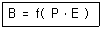
- 연령
- 성격
- 작업환경
- 지능
(정답률: 87%)
20. 다음 중 작업현장에서 낙하의 위험과 상부에 전선이 있어 감전위험이 있을 때 사용하여야 하는 안전모의 종류는?
- A형 안전모
- B형 안전모
- AB형 안전모
- AE형 안전모
(정답률: 83%)
2과목: 인간공학 및 시스템안전공학
21. 인간의 감각 중 반응시간이 가장 빠른 것은?
- 시각
- 통각
- 청각
- 미각
(정답률: 74%)
22. 산업안전보건법상 근로자가 상시로 정밀작업을 하는 장소의 작업면 조도기준으로 옳은 것은?
- 75럭스(lux) 이상
- 150럭스(lux) 이상
- 300럭스(lux) 이상
- 750럭스(lux) 이상
(정답률: 56%)
23. 다음 중 HAZOP기법에서 사용하는 가이드워드와 그 의미가 잘못 연결된 것은?
- Part of : 성질상의 감소
- More/Less : 정량적인 증가 또는 감소
- No/Not : 설계 의도의 완전한 부정
- Other than : 기타 환경적인 요인
(정답률: 74%)
24. FT도에 사용하는 기호에서 3개의 입력현상 중 임의의 시간에 2개가 발생하면 출력이 생기는 기호의 명칭은?
- 우선적 AND 게이트
- 조합 AND 게이트
- 억제 게이트
- 배타적 OR 게이트
(정답률: 70%)
25. 다음 중 작업공간의 배치에 있어 구성요소 배치의 원칙에 해당하지 않는 것은?
- 기능성의 원칙
- 사용빈도의 원칙
- 사용순서의 원칙
- 사용방법의 원칙
(정답률: 64%)
26. 인간-기계 시스템을 설계할 때에는 특정기능을 기계에 할당하거나 인간에게 할당하게 된다. 이러한 기능할당과 관련된 사항으로 바람직하지 않은 것은?
- 일반적으로 인간은 주위가 이상하거나 예기치 못한 사건을 감지하여 대처하는 업무를 수행한다.
- 일반적으로 기계는 장시간 일관성이 있는 작업을 수행한다.
- 인간은 소음, 이상온도 등의 환경에서 수행하고 기계는 주관적인 추산과 평가 작업을 수행한다.
- 인간은 원칙을 적용하여 다양한 문제를 해결하는 능력이 기계에 비해 우월하다.
(정답률: 76%)
27. 일정한 고장률을 가진 어떤 기계의 고장률이 시간당 0.0004 일 때 10시간 이내에 고장을 일으킬 확률은?
- 1 + e0.04
- 1 - e-0.004
- 1 - e0.04
- 1 - e-0.00004
(정답률: 67%)
28. 다음 중 소음에 의한 청력손실이 가장 심각한 주파수 범위는?
- 500 ~ 1000Hz
- 3000 ~ 4000Hz
- 8000 ~ 10000Hz
- 15000 ~ 20000Hz
(정답률: 68%)
29. 빨강, 노랑, 파랑의 3가지 색으로 구성된 교통 신호등이있다. 신호등은 항상 3가지 색 중 하나가 켜지도록 되어 있다. 1시간 동안 조사한 결과, 파란등은 총30분 동안, 빨간등과 노란등은 각각 총 15분 동안 켜진 것으로 나타났다. 이 신호등의 총 정보량은 몇 bit인가?
- 0.5
- 0.75
- 1.0
- 1.5
(정답률: 46%)
30. 산업안전보건법상 유해ㆍ위험방지계획서의 첨부서류 중 공사개요 및 안전보건관리계획에 포함되지 않는 것은?
- 공사 개요서
- 산업안전보건관리비 사용계획
- 위생시설물 설치 및 관리대책
- 안전관리 조직표
(정답률: 45%)
31. 다음 설명에 해당하는 인간의 오류모형은?
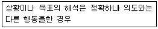
- 착오(Mistake)
- 실수(Slip)
- 건망증(Lapse)
- 위반(Violation)
(정답률: 68%)
32. 다음 중 안전성 평가의 제2단계인 정성적 평가시 진단 항목으로 가장 적절한 것은?
- 교육훈련 계획
- 공정기기 목록
- 적정한 인원 배치 계획
- 공정 작업을 위한 작업규정 유무
(정답률: 34%)
33. 다음 중 경고등의 점멸 속도로 가장 적합한 것은?
- 3 ~ 10회/초
- 20 ~ 40회/초
- 40 ~ 60회/초
- 60 ~ 90회/초
(정답률: 65%)
34. 다음 중 인체측정학에 있어 구조적 인체 치수는 신체가 어떠한 자세에 있을 때 측정한 치수를 말하는가?
- 양손을 벌리고 서있는 자세
- 고개를 들고 앉아있는 자세
- 움직이지 않고 고정된 자세
- 누워서 편안히 쉬고 있는 자세
(정답률: 59%)
35. [그림]과 같은 FT도에 대한 미니멀 컷셋(minimal cut sets)으로 옳은 것은? (단, Fussell의 알고리즘을 따른다.)
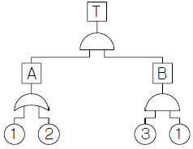
- {1,2}
- {1,3}
- {2,3}
- {1,2,3}
(정답률: 67%)
36. 다음 중 정량적 분석에 사용하는 시스템 위험분석 기법은?
- 사건수분석(ETA)
- 결함위험분석(FHA)
- 예비위험분석(PHA)
- 고장형태와 영향분석(FMEA)
(정답률: 47%)
37. 다음 중 신뢰성과 보전성 개선을 목적으로 한 효과적인 보전기록자료에 해당하는 것은?
- 자재관리표
- MTBF분석표
- 주유지시서
- 검사주기표
(정답률: 77%)
38. 다음 중 결함수분석(FTA)에 관한 설명과 가장 거리가 먼 것은?
- 연역적 방법이다.
- 버텀-업(Bottom-Up) 방식이다.
- 기능적 결함의 원인을 분석하는데 용이하다.
- 계량적 데이터가 축적되면 정량적 분석이 가능하다.
(정답률: 77%)
39. 다음 중 통화이해도를 측정하는 지표로서, 각 옥타브(octave)대의 음성과 잡음의 데시벨(dB)값에 가중치를 곱하여 합계를 구하는 것을 무엇이라 하는가?
- 이해도 점수
- 통화 간섭 수준
- 소음 기준 곡선
- 명료도 지수
(정답률: 72%)
40. 다음 중 인간공학의 정의로 가장 적합한 것은?
- 인간의 과오가 시스템에 미치는 영향을 최소화하기 위한 연구분야
- 인간, 기계, 물자, 환경으로 구성된 복잡한 체계의 효율을 최대로 활용하기 위하여 인간의 한계 능력을 최대화하는 학문분야
- 인간, 기계, 물자, 환경으로 구성된 복잡한 체계의 효율을 최대로 활용하기 위하여 인간의 생리적, 심리적 조건을 시스템에 맞추는 학문분야
- 인간의 특성과 한계 능력을 공학적으로 분석, 평가하여 이를 복잡한 체계의 설계에 응용함으로 효율을 최대로 활용할 수 있도록 하는 학문분야
(정답률: 69%)
3과목: 기계위험방지기술
41. 컨베이어 작업시작 전 점검사항에 해당하지 않는 것은?
- 브레이크 및 클러치 기능의 이상 유무
- 비상정지장치 기능의 이상 유무
- 이탈 등의 방지장치기능의 이상 유무
- 원동기 및 풀리 기능의 이상 유무
(정답률: 61%)
42. 마찰클러치식 프레스에서 손이 광선을 차단한 순간부터 급정지 장치가 작동 개시하기까지의 시간이 0.⑤초 이고, 급정지 장치가 작동을 개시하여 슬라이드가 정지할 때까지의 시간이 0.15초 일 때 이 광전자식 방호장치의 최소 안전 거리는 몇 mm 인가?
- 80
- 160
- 240
- 320
(정답률: 47%)
43. 산업용 로봇의 작동범위 내에서 해당 로봇에 대하여 교시 등의 작업 시 예기치 못한 작동 및 오조작에 의한 위험을 방지하기 위하여 수립해야 하는 지침사항에 해당하지 않는 것은?
- 로봇 구성품의 설계 및 조립방법
- 2명 이상의 근로자에게 작업을 시킬 경우의 신호방법
- 로봇이 조작방법 및 순서
- 작업 중의 매니퓰레이터의 속도
(정답률: 70%)
44. 프레스의 위험성에 대해 기술한 내용으로 틀린 것은?
- 부품의 송급ㆍ배출이 핸드 인 다이로 이루어지는 것은 작업 시 위험성이 크다.
- 마찰식 클러치 프레스의 경우 하강중인 슬라이드를 정지시킬 수 없어서 기계자체 기능상의 위험성을 내포하고 있다.
- 일반적으로 프레스는 범용성이 우수한 기계지만 그에 대응하는 안전조치들이 미비한 경우가 많아 위험성이 높다.
- 신체의 일부가 작업점에 노출되면 전단ㆍ협착 등의 재해를 당할 위험성이 매우 높다.
(정답률: 70%)
45. 와이어로프(wire rope) 소켓(socket) 멈춤 방법 중 밀폐법(Closed Socket)인 것은?
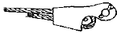
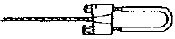
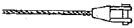
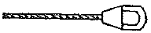
(정답률: 57%)
46. 지게차를 이용한 작업을 안전하게 수행하기 위한 장치와 거리가 먼 것은?
- 헤드 가드
- 전조등 및 후미등
- 훅 및 샤클
- 백레스트
(정답률: 73%)
47. 산업용 로봇이 작동범위에서 그 로봇에 관하여 교시 등의 작업을 할 때 작업 시작 전 점검사항이 아닌 것은?
- 외부 전선의 피복 또는 외장의 손상 유무
- 매니퓰레이터 작동의 이상 유무
- 제동장치 및 비상정지 장치의 기능
- 윤활유의 상태
(정답률: 74%)
48. 숫돌 외경이 150mm일 경우 평형 플랜지의 직경은 최소 몇 mm 이상이어야 하는가?
- 25mm
- 50mm
- 75mm
- 100mm
(정답률: 77%)
49. 회전속도가 500rpm인 탁상연삭기에서 숫돌차의 원주길이가 214mm라고 할 때 원주속도는 약 몇 m/min 인가?
- 54
- 107
- 214
- 321
(정답률: 46%)
50. 공작기계인 선반에서 길이가 지름의 12배 이상인 긴 공작물의 절삭 시 사용되는 장치로 적합한 것은?
- 칩 브레이커
- 척 커버
- 방진구
- 실드
(정답률: 56%)
51. 압력용기 및 공기압축기를 대상으로 하는 위험기계기구 방호장치 기준에 관한 설명으로 틀린 것은?
- 압력용기에는 최고사용압력이하에서 작동하는 압력방출장치(안전밸브 및 파열판을 포함)를 설치하여야 한다.
- 공기압축기에는 압력방출장치 및 언로드 밸브(압력 제한 스위치를 포함)를 설치하여야 한다.
- 압력용기 및 공기압축기에서 사용하는 압력방출장치는 관련 법령에 따른 안전인증을 받은 제품이어야 한다.
- 압력방출장치는 검사가 용이한 위치의 용기본체 또는 그 본체에 부설되는 관에 압력방출장치의 밸브축이 수평이 되게 설치하여야 한다.
(정답률: 65%)
52. 정 작업시의 작업안전수칙으로 틀린 것은?
- 정 작업시에는 보안경을 착용하여야 한다.
- 정 작업시에는 담금질된 재료를 가공해서는 안 된다.
- 정 작업을 시작할 때와 끝날 무렵에는 세게 친다.
- 철강재를 정으로 절단시에는 철편이 날아 튀는 것에 주의한다.
(정답률: 80%)
53. 침투탐상검사 방법에서 일반적인 작업 순서로 맞는 것은?
- 전처리→침투처리→세척처리→현상처리→관찰→후처리
- 전처리→세척처리→침투처리→현상처리→관찰→후처리
- 전처리→현상처리→침투처리→세척처리→관찰→후처리
- 전처리→침투처리→현상처리→세척처리→관찰→후처리
(정답률: 59%)
54. 금속의 용접, 용단에 사용하는 가스의 용기를 취급할 시 유의사항으로 틀린 것은?
- 통풍이나 환기가 불충분한 장소는 설치를 피한다.
- 용기의 온도는 40℃가 넘지 않도록 한다.
- 운반하는 경우에는 캡을 벗기고 운반한다.
- 밸브의 개폐는 서서히 하도록 한다.
(정답률: 82%)
55. 인장강도가 380MPa이고, 지름이 30mm인 연강의 원형봉에 31.4kN의 인장하중이 작용할 때 안전율은 얼마인가?
- 9.62
- 8.55
- 7.86
- 6.54
(정답률: 44%)
56. 왕복 운동하는 운동부와 고정부 사이에 형성되는 위험점은?
- 끼임점
- 협착점
- 절단점
- 물림점
(정답률: 65%)
57. 방사선 투과검사에서 투과사진의 성질을 점검할 때 확인해야 할 항목으로 거리가 먼 것은?
- 투과도계의 식별도
- 시험부의 사진농도 범위
- 계조계의 값
- 주파수의 크기
(정답률: 63%)
58. 산업용 로봇에 사용되는 안전 매트의 종류 및 일반구조에 관한 설명으로 틀린 것은?
- 안전 매트의 종류는 연결사용 가능여부에 따라 단일 감지기와 복합 감지기가 있다.
- 단선 경보장치가 부착되어 있어야 한다.
- 감응시간을 조절하는 장치가 부착되어 있어야 한다.
- 감응도 조절장치가 있는 경우 봉인되어 있어야 한다.
(정답률: 62%)
59. 이상온도, 이상기압, 과부하 등 기계의 부하가 안전 한계치를 초과하는 경우에 이를 감지하고 자동으로 안전상태가 되도록 조정하거나 기계의 작동을 중지시키는 방호장치는?
- 감지형 방호장치
- 접근거부형 방호장치
- 위치제한형 방호장치
- 접근반응형 방호장치
(정답률: 77%)
60. 다음 중( ) 안에 들어갈 내용으로 옳게 짝지어진 것은?
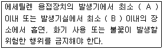
- A: 5m, B: 3m
- A: 3m, B: 2m
- A: 3m, B: 5m
- A: 2m, B: 3m
(정답률: 70%)
4과목: 전기위험방지기술
61. 가스 위험장소를 3등분으로 분류하는 목적은?
- 안전관리자를 선임해야 할지를 결정하기 위해
- 방폭전기 설비의 선정을 하고 균형 있는 방폭 협조를 실시하기 위해
- 가스위험 장소를 분류하여 작업자 및 방문자의 출입을 통제하기 위해
- 화재 폭발 등 재해사고가 발생되고 고용노동부에 폭발 등급을 보고하기 위해
(정답률: 64%)
62. 동전기와 정전기에서 공통적으로 발생하는 것은?
- 감전에 의한 사망ㆍ실신 등
- 정전으로 인한 제반 장애 및 2차 재해
- 충격으로 인한 추락, 전도에 의한 상해
- 반복충격으로 인한 정신 및 피부질환
(정답률: 44%)
63. 전선로를 정전시키고 보수작업을 할 때 유도전압이나 오통전으로 인한 재해를 방지하기 위한 안전조치로 가장 옳은 것은?
- 보호구를 작용한다.
- 단락접지를 시행한다.
- 방호구를 사용한다.
- 검전기로 확인한다.
(정답률: 68%)
64. 이상전압 발생의 우려가 가장 적은 접지방식은?
- 비접지방식
- 직접접지방식
- 저항접지방식
- 소호리액터접지방식
(정답률: 47%)
65. 폭연성 분진 또는 화약류의 분말이 존재하는 곳의 저압옥내배선은 어느 공사에 의하는가?
- 금속관 공사
- 캡타이어 케이블 공사
- 합성수지관 공사
- 애자사용 공사
(정답률: 59%)
66. 총포, 도검, 화약류 등의 화약류 저장소 안에는 전기설비를 시설하여서는 안 되지만, 백열등이나 형광등 또는 이들에 전기를 공급하기 위한 전기설비를 시설할 때의 규정에 맞지 않는 것은?
- 전로의 대지전압은 450V이하 일 것
- 전기기계기구는 전폐형의 것일 것
- 케이블을 전기기계기구에 인입할 때에는 인입부분에서 케이블이 손상될 우려가 없도록 할 것
- 개폐기 또는 과전류 차단기에서 화약류 저장소 인입구까지의 배선은 케이블을 사용하여야 하며, 또한 지중에 시설할 것
(정답률: 52%)
67. 교류 아크용접기의 허용사용률[%]은? (단, 정격사용율은 10%, 2차정격전류는 400A, 교류 아크용접기의 사용전류는 200A이다.)
- 40%
- 50%
- 60%
- 70%
(정답률: 57%)
68. 작업장 내에서 불의의 감전사고가 발생 하였을 경우 우선적으로 응급조치하여야 할 사항으로 가장 적절하지 않은 것은?
- 전격을 받아 실신하였을 때는 즉시 재해자를 병원에 구급조치 하여야 한다.
- 우선적으로 재해자를 접촉되어 있는 충전부로터 분리 시킨다.
- 제3자는 즉시 가까운 스위치를 개방하여 전류의 흐름을 중단시킨다.
- 전격에 의해 실신했을 때 그곳에서 즉시 인공호흡을 행하는 것이 급선무이다.
(정답률: 50%)
69. 감전에 의해 호흡이 정지한 후에 인공호흡을 즉시 실시하면 소생할 수 있는데, 감전에 의한 호흡 정지 후 1분 이내에 올바른 방법으로 인공호흡을 실시하였을 경우의 소생률은 약 몇 % 정도인가?
- 50%
- 60%
- 75%
- 95%
(정답률: 80%)
70. 정격전압 220V의 전동기에 전력을 공급하기 위하여 배선하는 전선로의 절연저항값은 몇 [MΩ] 이상인가?(관련 규정 개정전 문제로 여기서는 기존 정답인 2번을 누르면 정답 처리됩니다. 자세한 내용은 해설을 참고하세요.)
- 0.1
- 0.2
- 0.3
- 0.4
(정답률: 63%)
71. 접지의 종류와 목적이 바르게 짝지어지지 않는 것은?
- 계통접지 - 고압전로와 저압전로가 혼촉 되었을 때의 감전이나 화재 방지를 위하여
- 지락검출용 접지 - 누전차단기의 동작을 확실하게 하기 위하여
- 기능용 접지 - 피뢰기 등의 기능손상을 방지하기 위하여
- 등전위 접지 - 병원에 있어서 의료기기 사용시 안전을 위하여
(정답률: 53%)
72. 다음 중 공통 접지의 장점이 아닌 것은?
- 여러 설비가 공통의 접지 전극에 연결되므로 장비간의 전위차가 발생된다.
- 시공 접지봉 수를 줄일 수 있어 접지공사비를 줄일 수 있다.
- 접지선이 짧아지고 접지계통이 단순해져 보수 점검이 쉽다.
- 접지극이 병렬로 되므로 독립접지에 비해 합성저항 값이 낮아진다.
(정답률: 48%)
73. 전격 재해를 가장 잘 설명한 것은?
- 30mA 이상의 전류가 1000ms 이상 인체에 흘러 심실 세동을 일으킬 정도의 감전재해를 말한다.
- 감전사고로 인한 상태이며, 2차적인 추락, 전도 등에 의한 인명 상해를 말한다.
- 정전기 또는 충전부나 낙뢰에 인체가 접촉하는 감전 사고로 인한 상해를 말하며 전자파에 의한 것은 전격 재해라 하지 않는다.
- 전격이란 감전과 구분하기 어려워 감전으로 인한 상해가 발생했을 때에만 전격재해라 말한다.
(정답률: 54%)
74. 다음 감전 전류의 등가 회로에서 인체에 흐르는 전류(I2)는 약 몇 [mA]인가? (단, R1은 제3종 접지공사의 저항값으로 한다.)
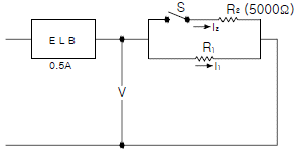
- 1
- 10
- 100
- 1000
(정답률: 50%)
75. 심실세동 전류란?
- 최소 감지전류
- 치사적 전류
- 고통 한계전류
- 마비 한계전류
(정답률: 71%)
76. 누전차단기의 설치시 주의하여야 할 사항 중 틀린 것은?
- 누전차단기는 설치의 기능을 고려하여 전기 취급자가 행할 것
- 누전차단기를 설치할 경우 피보호 기기에 접지는 생략
- 누전차단기의 정격 전류용량은 당해전로의 부하전류치 이상의 전류치를 가지는 것
- 전로의 전압은 그 변동 범위가 차단기의 정격전압 75%~120%까지로 한다.
(정답률: 42%)
77. 전하의 발생과 축적은 동시에 일어나며 다음의 요인에 의해 정전기가 축척되게 되는데 이 요인과 가장 관련이 먼것은?
- 저도전율 액체
- 절연 격리된 도전체
- 절연물질
- 금속 파이프 내의 분진
(정답률: 38%)
78. 과전류에 의한 전선의 인화로부터 용단에 이르기까지 각 단계별 기준으로 옳지 않은 것은? (단, 전선전류 밀도의 단위는 [A/mm2]이다.)
- 인화 단계 : 40 ~ 43 A/mm2
- 착화 단계 : 43 ~ 60 A/mm2
- 발화 단계 : 60 ~ 150 A/mm2
- 용단 단계 : 120 A/mm2 이상
(정답률: 67%)
79. 피뢰기가 갖추어야 할 이상적인 성능 중 잘못된 것은?
- 제한전압이 낮아야 한다.
- 반복동작이 가능하여야 한다.
- 충격방전 개시전압이 높아야 한다.
- 뇌전류의 방전능력이 크고 속류의 차단이 확실하여야 한다.
(정답률: 70%)
80. 인체의 대전에 기인하여 발생하는 전격의 발생한계 전위는 몇 [kV] 정도 인가?
- 0.5
- 3.0
- 5.5
- 8.0
(정답률: 47%)
5과목: 화학설비위험방지기술
81. 다음 중 안전밸브에 관한 설명으로 틀린 것은?
- 안전밸브는 단독으로도 급격한 압력상승의 신속한 제어가 용이하다.
- 안전밸브의 사용에 있어 배기능력의 결정은 매우 중요한 사항이다.
- 안전밸브는 물리적 상태 변화에 대응하기 위한 안전 장치이다.
- 안전밸브의 원리는 스프링과 같이 기계적 하중을 일정 비율로 조절할 수 있는 장치를 이용한다.
(정답률: 42%)
82. 다음 중 연소범위에 있는 혼합기의 최소발화에너지에 영향을 끼치는 인자에 관한 설명으로 틀린 것은?
- 온도가 높아질수록 최소발화에너지는 낮아진다.
- 산소보다 공기 중에서의 최소발화에너지가 더 낮다.
- 압력이 너무 낮아지면 최소발화에너지 관계식을 적용 할 수 없으며, 아무리 큰 에너지를 주어도 발화하지 않을 수 있다.
- 메탄-공기 혼합기에서 메탄의 농도가 양론농도보다 약간 클 때, 기압이 높을수록, 최소발화에너지는 낮아 진다.
(정답률: 44%)
83. 다음 중 금속화재에 해당하는 화재의 급수는?
- A급
- B급
- C급
- D급
(정답률: 76%)
84. 다음 중 화학공장의 폐회로방식 제어계의 작동 순서를 가장 올바르게 나열한 것은?
- 공정설비 → 조절계 → 조작부 → 검출부 → 공정설비
- 공정설비 → 검출부 → 조절계 → 조작부 → 공정설비
- 공정설비 → 조작부 → 검출부 → 조절계 → 공정설비
- 공정설비 → 조작부 → 조절계 → 검출부 → 공정설비
(정답률: 56%)
85. 다음 중 "BLEVE"를 나타낸 용어로 옳은 것은?
- 개방계 증기운 폭발
- 비등액 팽창증기폭발
- 고농도의 분진폭발
- 저농도의 분해폭발
(정답률: 74%)
86. 특수화학설비를 설치할 때 내부의 이상 상태를 조기에 파악하기 위하여 필요한 계측장치가 아닌 것은?
- 습도계
- 유량계
- 온도계
- 압력계
(정답률: 64%)
87. 다음 중 가스 또는 분진 폭발 위험장소에 설치되는 건축물의 내화 구조를 설명한 것으로 틀린 것은?
- 건축물 기둥 및 보는 지상 1층까지 내화구조로 한다.
- 위험물 저장ㆍ취급용기의 지지대는 지상으로부터 지지대의 끝부분까지 내화구조로 한다.
- 건축물 주변에 자동소화설비를 설치한 경우 건축물 화재시 1시간 이상 그 안전성을 유지한 경우는 내화 구조로 하지 아니할 수 있다.
- 배관ㆍ전선관 등의 지지대는 지상으로 1단까지 내화 구조로 하며 1단은 6m 이내로 한다.
(정답률: 68%)
88. 다음 중 용액이나 슬러리(slurry) 사용에 가장 적절한 건조 설비는?
- 상자형 건조기
- 터널형 건조기
- 진동 건조기
- 드럼 건조기
(정답률: 54%)
89. 다음 중 산업안전보건법상 폭발성 물질에 해당하는 것은?
- 유기과산화물
- 리듐
- 황
- 질산
(정답률: 64%)
90. 산업안전보건법상 다음 내용에 해당하는 폭발위험 요소는?
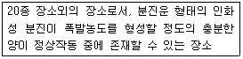
- 21종 장소
- 22종 장소
- 0종 장소
- 1종 장소
(정답률: 64%)
91. 산업안전보건법에서 분류한 위험물질의 종류 중 부식성 산류는 농도가 몇 % 이상인 염산, 황산, 질산, 그 밖에 이와 같은 정도 이상의 부식성을 가지는 물질을 말하는가?
- 10
- 15
- 20
- 25
(정답률: 63%)
92. 다음 중 자연 발화의 방지법에 관계가 없는 것은?
- 점화원을 제거한다.
- 저장소 등의 주위 온도를 낮게 한다.
- 습기가 많은 곳에는 저장하지 않는다.
- 통풍이나 저장법을 고려하여 열의 축적을 방지한다.
(정답률: 62%)
93. 다음 설명에 해당하는 소화 효과는?
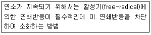
- 냉각 소화
- 질식 소화
- 제거 소화
- 억제 소화
(정답률: 56%)
94. 다음 중 분말소화설비를 설치하여야 할 대상과 가장 거리가 먼 것은?(문제 오류로 실제 시험에서는 모두 정답 처리 되었습니다. 여기서는 1번을 누르면 정답 처리 됩니다.)
- 인화성 액체를 취급하는 장소
- 옥내외의 트랜스 등 전기기기 화재가 발생하기 쉬운장소
- 종이 및 직물류의 일반 가연물로서 연소가 항상 표면에 행하여지는 화재
- 유조선 및 액체원료를 원동력으로 하는 선박 등의 엔진실
(정답률: 71%)
95. 다음 중 압축하면 폭발할 위험성이 높아서 아세톤 등에 용해시켜 다공성 물질과 함께 저장하는 물질은?
- 염소
- 에탄
- 아세틸렌
- 수소
(정답률: 73%)
96. 다음 중 인화성 가스에 관한 설명으로 틀린 것은?
- 아세틸렌가스는 용해 가스로서 녹색으로 도색한 용기를 사용한다.
- 메탄가스는 가장 간단한 탄화수소 기체이며, 온실 효과가 있다.
- 수소가스는 물에 잘 녹지 않으며, 온도가 높아지면 반응성이 커진다.
- 프로판 가스의 연소범위는 2.1~9.5% 정도이며, 공기보다 무겁다.
(정답률: 73%)
97. 각 물질의 폭발상한계와 하한계가 다음 [표]와 같을 때 다음 중 위험도가 가장 큰 물질은?
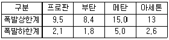
- 프로판
- 부탄
- 메탄
- 아세톤
(정답률: 61%)
98. 공기 중에는 암모니아가 20ppm(노출기준25ppm), 톨루엔이 20ppm(노출기준 50ppm)이 완전 혼합되어 존재하고 있다. 혼합물질의 노출기준을 보정하는데 활용하는 노출지수는 약 얼마인가? (단, 두 물질 간에 유해성이 인체의 서로 다른 부위에 작용한다는 증거는 없다.)
- 1.0
- 1.2
- 1.5
- 1.6
(정답률: 61%)
99. 다음 중 공정안전보고서에 관한 설명으로 틀린 것은?
- 공정안전보고서를 작성할 때에는 산업안전보건위원회의 심의를 거쳐야 한다.
- 공정안전보고서를 작성할 때에는 산업안전보건위원회가 설치되어 있지 아니한 사업장의 경우에는 근로자 대표의 의견을 들어야 한다.
- 공정안전보고서의 내용을 변경하여야 할 사유가 발생한 경우에는 14일 이내 고용노동부장관의 승인을 득한 후 이를 보완하여야 한다.
- 고용노동부장관은 정하는 바에 따라 공정안전보고서의 이행 상태를 정기적으로 평가하고, 그 결과에 따른 보완 상태가 불량한 사업장의 사업주에게는 공정안전보고서를 다시 제출하도록 명할 수 있다.
(정답률: 68%)
100. 가연성 가스 혼합물을 구성하는 각 성분의 조성과 연소범위가 다음 [표]와 같을 때 혼합가스의 연소하한값은 약 몇 vol% 인가?
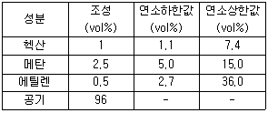
- 2.51
- 7.51
- 12.07
- 15.01
(정답률: 57%)
6과목: 건설안전기술
101. 다음 중 건설공사 안전관리(安全管理)순서로 옳은 것은?
- 계획(Plan) - 실시(Do) - 검토(Check) - 조치(Action)
- 실시(Do) - 조치(Action) - 검토(Check) - 계획(Plan)
- 계획(Plan) - 실시(Do) - 조치(Action) - 검토(Check)
- 검토(Check) - 계획(Plan) - 조치(Action) - 실시(Do)
(정답률: 61%)
102. 강풍 시 타워크레인의 작업제한과 관련된 사항으로 타워크레인의 운전작업을 중지해야 하는 순간풍속 기준으로 옳은 것은?(2022년 02월 21일 확인된 규정 적용)
- 순간풍속이 매초 당 10 미터 초과
- 순간풍속이 매초 당 15 미터 초과
- 순간풍속이 매초 당 20 미터 초과
- 순간풍속이 매초 당 25 미터 초과
(정답률: 69%)
103. 다음 중 건물기초에서 발파허용진동치 규제 기준으로 옳지 않은 것은?
- 문화재 : 0.2cm/sec
- 주택, 아파트 : 0.5cm/sec
- 상가 : 1.0cm/sec
- 철골콘크리트 빌딩 : 0.1 ~ 0.5cm/sec
(정답률: 66%)
104. 쇼벨계 굴착기의 작업안전대책으로 옳지 않은 것은?
- 항상 뒤쪽의 카운터웨이트의 회전반경을 측정한 후 작업에 임한다.
- 작업시에는 항상 사람의 접근에 특별히 주의한다.
- 유압계통 분리시에는 붐을 지면에 놓고 엔진을 정지 시킨 후 유압을 제거한다.
- 장비의 주차시는 굴착작업장에 주차하고 버킷은 지면에서 띄워 놓도록 한다.
(정답률: 76%)
1⑤. 흙막이 공법을 흙막이 지지방식에 의한 분류와 구조방식에 의한 분류로 나눌 때 다음 중 지지방식에 의한 분류에 해당하는 것은?
- 수평 버팀대식 흙막이 공법
- H-Pile 공법
- 지하연속벽 공법
- Top down method 공법
(정답률: 70%)
106. 토석붕괴의 외적 원인으로 옳지 않은 것은?
- 사면, 법면의 경사 및 기울기의 증가
- 절토 및 성토 높이의 증가
- 토사 및 암석의 혼합층 두께
- 토석의 강도 저하
(정답률: 60%)
107. 다음은 안전난간의 구조 및 설치요건에 대한 기준이다. ( )안에 적당한 숫자는?
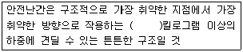
- 80
- 100
- 120
- 150
(정답률: 64%)
108. 다음 중 터널 굴착 작업시 시공계획에 포함되어야 할 사항으로 거리가 먼 것은?
- 굴착 방법
- 터널 지보공 및 복공의 시공 방법과 용수의 처리 방법
- 환기 또는 조명시설의 설치 방법
- 계기의 이상 유무 점검
(정답률: 56%)
109. 로드(rod)ㆍ유압잭(Jack) 등을 이용하여 거푸집을 연속적으로 이동시키면서 콘크리트를 타설할 때 사용되는 것으로 silo 공사 등에 적합한 거푸집은?
- 메탈폼
- 슬라이딩폼
- 워플폼
- 페코빔
(정답률: 78%)
110. 추락에 의한 위험 방지를 위하여 설치하는 안전방망의 경우 작업면으로부터 망의 설치지점까지의 수직거리가 최대 몇 미터를 초과하지 않도록 설치하는가?
- 5m
- 7m
- 8m
- 10m
(정답률: 51%)
111. 굴착과 싣기를 동시에 할 수 있는 토공기계가 아닌 것은?
- 트랙터 셔블(tractor shovel)
- 백호(back hoe)
- 파워 셔블(power shovel)
- 모터 그레이더(motor grader)
(정답률: 69%)
112. 연약지반의 이상현상 중 하나인 히빙(heaving)현상에 대한 안전대책이 아닌 것은?
- 흙막이벽의 관입깊이를 깊게 한다.
- 굴착면에 토사 등으로 하중을 가한다.
- 흙막이 배면의 표토를 제거하여 토압을 경감시킨다.
- 주변 수위를 높인다.
(정답률: 62%)
113. 다음 중 건설공사 유해ㆍ위험방지계획서 제출대상공사가 아닌 것은?
- 지상높이가 50m인 건축물 또는 인공구조물 건설공사
- 연면적이 3,000m2 인 냉동ㆍ냉장창고시설의 설비공사
- 최대지간길이가 60m 인 교량건설공사
- 터널건설공사
(정답률: 67%)
114. 가설통로를 설치하는 경우의 준수사항 기준으로 옳지 않은 것은?
- 건설공사에 사용하는 높이 8m 이상인 비계다리에는 5m 이내마다 계단참을 설치하는 것
- 수직갱에 가설된 통로의 길이가 15m 이상인 경우에는 10m 이내마다 계단참을 설치할 것
- 경사가 15°를 초과하는 경우에는 미끄러지지 아니하는 구조로 할 것
- 추락할 위험이 있는 장소에는 안전난간을 설치할 것
(정답률: 72%)
115. 10cm 그물코 크기의 방망사 신품에 대한 인장강도는 얼마 이상이어야 하는가? (단, 매듭 없는 방망)
- 240kg
- 200kg
- 110kg
- 80kg
(정답률: 54%)
116. 거푸집동바리 등을 조립하는 경우에 준수해야 할 사항으로 옳지 않은 것은?
- 동바리로 사용하는 강관(파이프 서포트 제외)은 높이 2m 이내마다 수평연결재를 1개 방향으로 만들고 수평 연결재의 변위를 방지할 것
- 동바리로 사용하는 강관(파이프 서포트 제외)은 멍에 등을 상단에 올릴 경우에는 해당 상단에 강재의 단판을 붙여 멍에 등을 고정시킬 것
- 동바리로 사용하는 파이프 서포트는 3개 이상 이어서 사용하지 않도록 할 것
- 동바리로 사용하는 파이프 서포트를 이어서 사용하는 경우에는 4개 이상의 볼트 또는 전용철물을 사용하여 이을 것
(정답률: 51%)
117. 콘크리트 강도에 영향을 주는 요소로 거리가 먼 것은?
- 콘크리트 재령 및 배합
- 양생 온도와 습도
- 타설 및 다지기
- 거푸집 모양과 형상
(정답률: 74%)
118. 다음은 낙하물 방지망 또는 방호선반을 설치하는 경우의 준수해야할 사항이다. ( )안에 알맞은 숫자는?
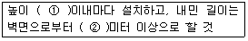
- ① : 10, ② : 2
- ① : 8, ② : 2
- ① : 10, ② : 3
- ① : 8, ② : 3
(정답률: 63%)
119. 물체가 떨어지거나 날아올 위험이 있는 때 위험방지를 위해 준수해야 할 조치사항으로 가장 거리가 먼 것은?
- 낙하물방지망 설치
- 출입금지구역 설정
- 보호구 착용
- 작업지휘자 선정
(정답률: 71%)
120. 철골 작업시 기상조건에 따라 안전상 작업을 중지토록 하여야 한다. 다음 중 작업을 중지토록 하는 기준으로 옳은 것은?
- 강우량이 시간당 5mm 이상인 경우
- 강우량이 시간당 10mm 이상인 경우
- 풍속이 초당 10m 이상인 경우
- 강설량이 시간당 20mm 이상인 경우
(정답률: 68%)